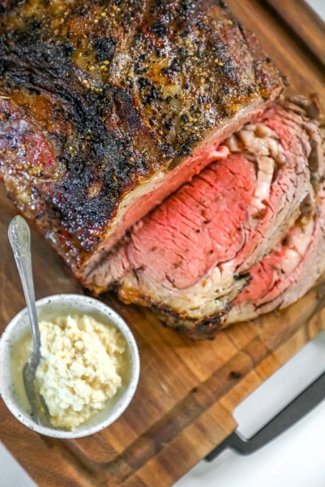

THE BEST RIBEYE ROAST RECIPE

Delicious, perfect ribeye roast is a recipe every home cook should have in
their repertoire – it is simple to prepare, but makes a big impact!
Ingredients:
- Ribeye roast, about 5 pounds – pat roast dry from any packaging liquid
and let roast come to room temperature for best results.
- Butter, for brushing – basting ribeye roast with butter helps
herbs and spices stick to meat, helps lock in flavor, and adds fat to develop a crisp,
crunchy crust to the outside of meat for a rich and delicious flavor that is hearty and
sumptuous.
- Minced garlic, garlic brings an earthy, rich layer of flavor to meat
that can enhance meaty flavor and add more dimension to your dish.
- Kosher salt, a high quality salt, preferably one with a crunchy
texture that won’t melt into the meat is a lovely addition to ribeye roast crust.
- Italian seasonings, adding layer of flavor from basil, thyme, sage,
oregano, rosemary, and coriander give more depth to your meat’s flavor and make it
completely irresistible!
Instructions:
- Prep - Slather in melted butter and cover in seasonings.
- Broil - Broil to develop a crunchy crust.
- Roast - Roast to your preferred temperature.
(NO NEED TO COVER IT WHILE ROASTING)
- Rest - Let rest before carving to serve.